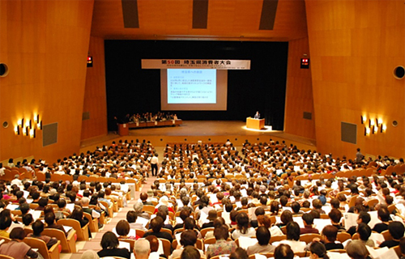
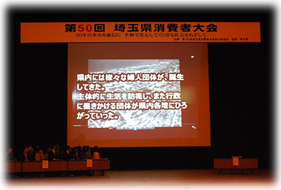
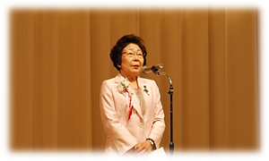
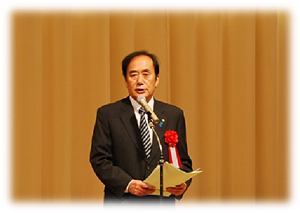
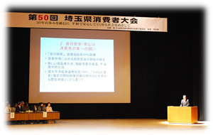
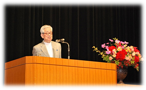
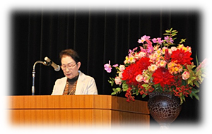

|
|
「50年の歩みを確信に 平和で安心してくらせる社会をめざして」を大会スローガンに、10月21日(火)に埼玉会館で、第50回埼玉県消費者大会が開催されました。  ■オープニング映像上映「50年の歩みを 確信に」第1回大会開催に至る背景から、これまでの大会を振り返りました。  ■実行委員長挨拶 柿沼トミ子 実行委員長 第50回埼玉県消費者大会実行委員会を代表して、柿沼トミ子実行委員長が挨拶しました。 「1965年11月11日大宮商工会館にて1300人を集め、埼玉県と埼玉県地域婦人会連合会の共催で、第1回の消費者大会が開催されました。富国強兵の流れから生産供給側の力の大きかった当時、全国でも婦人会の代表を務めていた大友よふ会長のもと、埼玉の消費者運動が全国に広がり、行政を動かす声につながり、カネミ油症、豊田商事の問題や製造物の責任問題など、消費者団体の力を合わせることで改善されました。 東日本大震災・原発事故からの復興は、いまや世界の問題です。50回目を迎えた今大会は27の団体が団結して開催しています。一人ひとりの力は弱いですが地球市民としてできることから行い、半世紀の実績を大切に、未来に向かって力を合わせていきましょう」と挨拶しました。 ■来賓挨拶 上田清司 埼玉県知事 来賓の上田清司埼玉県知事よりご挨拶いただきました。 挨拶の中で上田知事は、50年間にわたり、消費者団体が自らの力で、政治・行政を動かし、消費者問題の解決のために果たしてきた役割が大きかったと述べられました。また、今日の高齢者を中心とする消費者被害をなくすために消費者団体がそれぞれの得意分野を持ち寄り、ネットワークを形成することで問題の解決に大きな力になるとの期待を語られました。 ■「基調報告」「埼玉県への要請書」の提案岩岡宏保大会事務局長が基調報告と埼玉県への要請書の提案をおこないました。  消費者運動は「平和」「基本的人権」「生存権」などを大切にする、憲法をいかす取り組みとも言えます。その成果として、各種の法整備が進み、消費者庁・消費者委員会の設置に至っています。 食の安心安全は消費者の第一の願い、また安心してくらせる社会には安定した雇用と平等に教育が受けられる仕組みづくりが大切です。消費者団体としても地域において見守りネットワーク構築に力を発揮し、復興支援の継続や省エネ、再エネの促進に取り組みましょう。 日本はサンフランシスコ講和条約以降、戦争で誰も殺し殺されていません。これを世界の常識にしていくことが求められています。 ■記念講演大江健三郎さん(小説家・ノーベル文学賞受賞) 「私の人生を貫いているもの」と題して、少年期から現在に至る、生活や憲法についての思いなどを語られました。 今年のノーベル賞候補に日本国民と憲法9条が上がったことについて、受賞の発表日に大江さんのもとには文学賞ではなく平和賞についてのコメントを求めるメディアが多かったとの裏話を披露。また国内メディアよりも米国、英国、フランスからの取材者から評価が高く、自国にも平和を守る絶対的なものが必要であると言っていたとのこと。 終戦を迎えた当時大江さんは10歳の少年で、9条により戦争をしない、個人の人権を尊重する、日本国憲法が施行されたことが自分の出発点になったと話し、郷里の四国愛媛の情景と生活を想像させる思い出と、大学進学を決意し家族を説得するのにも、人権の尊重を訴えて説得したことを、ユーモアを交えて話されました。そのように、子どもたちが生き生きと前に向かって歩いて行こうという気持ちを与えたこと、同世代には憲法に励まされた人が多いことを振り返られました。 評論家、作家の友人で、「九条の会」の発起人である加藤周一氏、井上ひさし氏との交友のエピソード、同じ思いを描くことにも、井上氏は難しいことを優しく、優しいことは深く、深いことは面白く。対して大江さんは優しいことを難しく表現していると話され、会場から笑いがこぼれました。児童文学「星の王子さま」の「やらなければいけないこと」を引用して、「一番本質的なものをつかまえること、人格として貫く（戦争をしない国）ことで、アジアの、世界の平和を実現できるようになる」と、まとめられました。 ■大会アピール採択コーペルの飯尾茂子さんより提案され、参加者の拍手で確認されました。  |